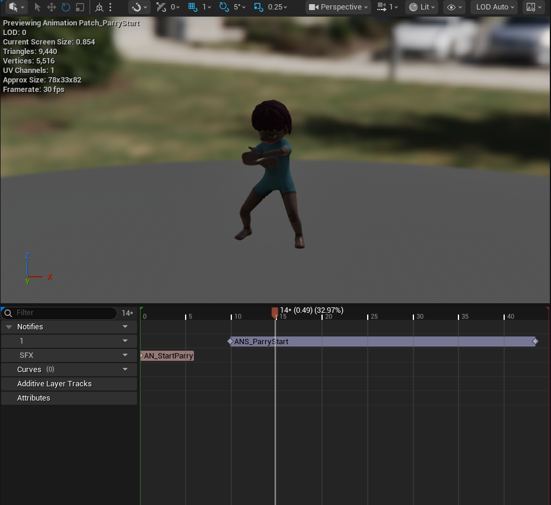

1. Aim & Shoot Flow
The player presses one input to enter aim mode, then another input to shoot the needle. The system uses a raycast to determine what the player hit and which behavior should activate.
PATCHED is a platforming, puzzle, and adventure game about a lonely abandoned doll who awakens inside an empty, decrepit factory. As the doll explores the factory, they collect parts to rebuild their body, unlock abilities like sewing, grappling, and parrying, and uncover the dark truth behind their creation.
On this project, I worked as a Lead Programmer and Technical Designer, focusing on core gameplay systems such as the grappling mechanic, parry system, limb-based health, enemy AI, animation blueprints, and team debugging support.
On Patched, I contributed to several core gameplay systems and supported the team by debugging Blueprint and code issues. My work focused on creating player-facing mechanics, enemy behavior, animation state logic, and technical systems that connected gameplay, animation, and level design.
Since this was a larger and longer project, my role also involved helping teammates troubleshoot systems that were not originally built by me, making sure features could continue working together as the project grew.
A multi-purpose needle system used for traversal, limb recovery, and special enemy interactions.
The player presses one input to enter aim mode, then another input to shoot the needle. The system uses a raycast to determine what the player hit and which behavior should activate.
If the raycast hits a valid grabbable object, the player is pulled toward that location, creating a traversal tool for reaching platforms and moving through the level.
If the raycast hits a detached limb, the limb is pulled back toward the player so it can be recovered and attached again.
If the needle hits a specific optional flying enemy, the grapple system triggers a minigame sequence. The minigame itself was not made by me, but I connected the grapple interaction so it could start from the needle hit behavior.

A timing-based defensive mechanic driven by animation notifies and enemy attack checks.
The player presses a button to start the parry animation. The parry is not active for the entire animation, which makes timing important.
Animation notifiers determine the valid parry frames. During these frames, the player is considered to be actively parrying.
When the enemy attack connects, the enemy checks whether the player is currently parrying. If the player is not parrying, the player loses the shield.
If the player is inside the correct parry window, the enemy becomes stunned instead of damaging the player. This creates a defensive option based on animation timing and player reaction.

A health system where damage physically removes limbs and changes the player state.
Instead of using a traditional health bar, the player loses limbs as their health decreases. When a limb is lost, the player drops that limb into the world, creating a visible and mechanical consequence for taking damage.
The player can later attach the limb back to their body, connecting the health system with player recovery and animation states.
Once player loses a limb, the texture for the player model will be replaced with a texture that makes the player limbs invisible. Depending on the amount of limbs certain mechanics like pushing boxes or jumping will be unavailable until player recovers their limbs.
Multiple enemy types built around different player detection methods and level design needs.
The deaf enemy uses sight-based detection to identify and chase the player. This enemy was designed around visual awareness and line-of-sight behavior.
The blind enemy tracks the player through sound. It reacts to audio cues, investigates the last heard location, and creates pressure through movement-based stealth.
Later in development, I created simpler versions of enemies using the core chase and attack behavior from the larger enemy systems. These enemies were triggered through box colliders to quickly start chase encounters.
One simplified enemy pushes the player so they can fall to their death, while another performs a regular attack and is used in areas where many enemies attack the player at once.
I authored the Animation Blueprint logic for the player, enemies, and extra gameplay actors.
For the player Animation Blueprint, I built cached state machines that changed depending on gameplay context, including grappling, missing limbs, sewing a limb back on, death, and aim mode.
Some state machines were more complex because the player could still use multiple mechanics when they had their full body. This required the animation logic to handle several overlapping gameplay behaviors while keeping transitions readable and responsive.
Grapple, aim, sewing limb, missing limb states, death, and full-body interaction states.
Enemy animations connected to chase, attack, stun, and detection behavior.
Animation logic was connected to gameplay systems through state checks, animation notifies, and Blueprint variables so player mechanics and enemy reactions could sync correctly with animation timing.
As Lead Programmer, I helped debug multiple team systems and supported teammates when features broke or needed integration help.
One issue involved switching from the regular gameplay camera to a spline camera. The original system caused the player to get stuck if they were not inside a specific collider, leaving them unable to move or interact.
The issue came from a branch/check that handled one result but did not properly reset player control when the condition was false. I helped identify that the false path was not hooked up to restore the player controller state, then connected the missing logic so the player could regain control correctly.
Patched helped me grow as both a gameplay programmer and technical designer because it required me to connect player mechanics, AI, animation, and level interactions into one playable experience. I learned how important it is to keep systems modular, debug across other developers’ work, and build gameplay features that can evolve as the project grows.